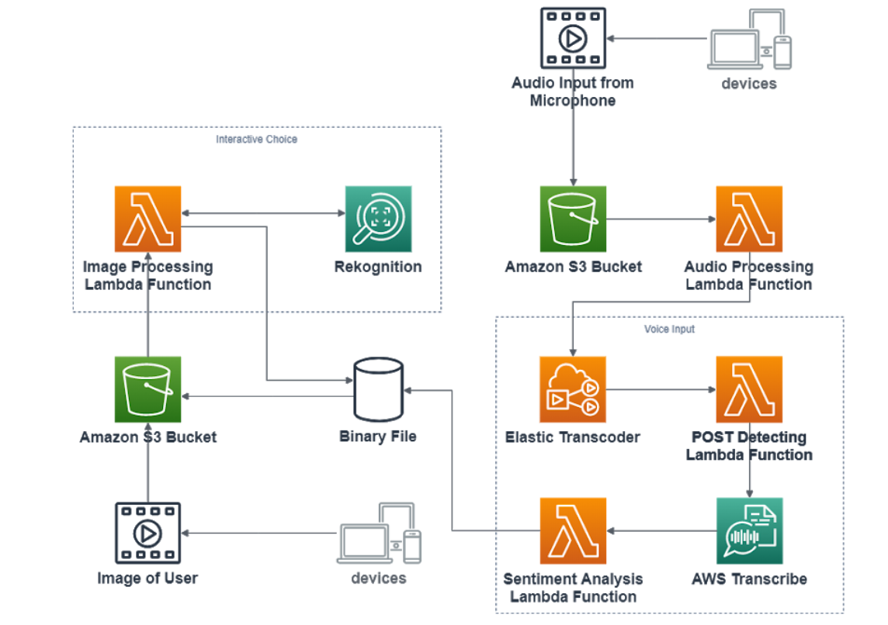

An app catered to the disabled for reintegration back into society
Walked around the neighbourhood to film 360 videos for an immersive VR experience, simulating
real-world social environments such as:
Taking the bus
Grocery shopping
Used Amazon Web Services to host and determine logic flow for VR experiences
Hosted the site on an EC2 instance
Every choice a person makes is logged by updating a DynamoDB collection,
and an algorithm
uses the results to produce statistics at the end of the courses
Used AWS Rekognition to identify participant gestures at every checkpoint,
eliminating the
need for participants to physically select a choice
Used AWS Transcribe to get participant input at every checkpoint,
eliminating the need for
participants to type their responses in social interactions
Tied all the services together using AWS Lambda, using
Node.js

iBMS
An app for hospitals to manage bed allocations, grouping them depending on their medical needs
Used AWS Comprehend Medical to determine patient needs, and an algorithm to sort
them into wards and
beds
Made with the Flask web framework
Used Flask-WTForms to describe web forms as objects
Used Flask-SQLAlchemy to interact with an SQLite database